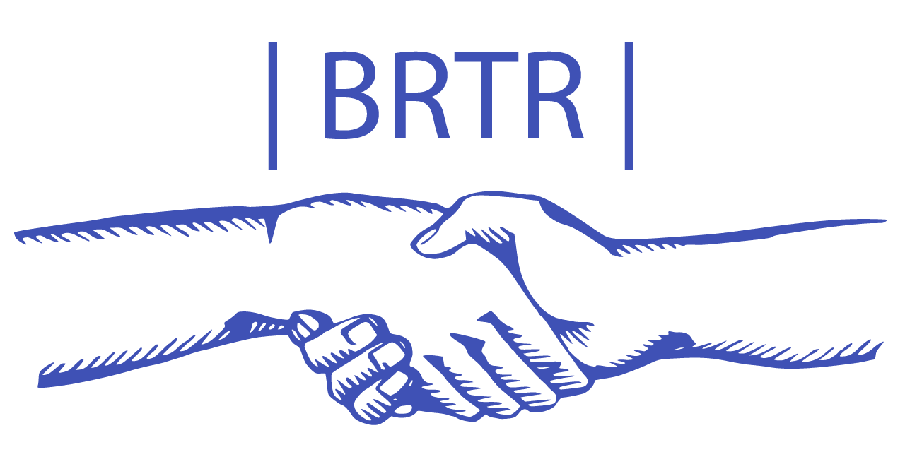

In trade, barter is a system of exchange in which participants in a transaction directly exchange goods or services for other goods or services without using a medium of exchange, such as money.
| BRTR |
Home
About
Contact